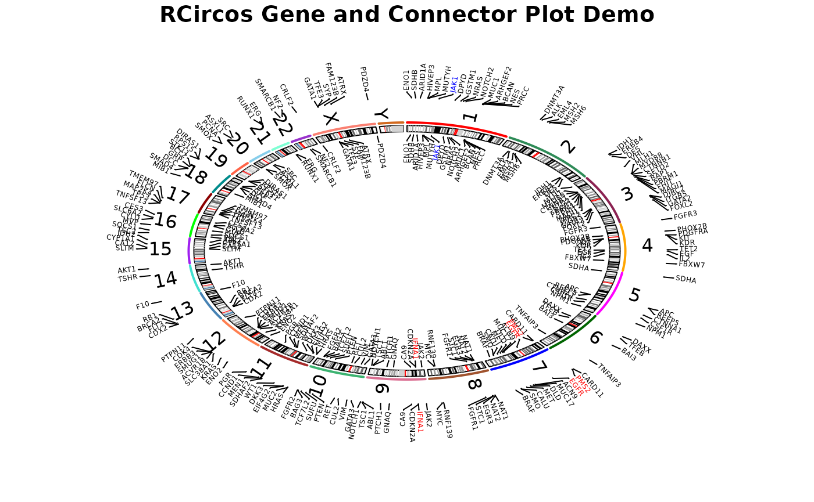

3 RCircos plot of connectors and gene names
Authors: Hongen Zhang Reviser: Tianze Cao
2025-06-05
Source:vignettes/Gene_Connector_Demo.Rmd
Gene_Connector_Demo.RmdThis demo draw chromosome ideogram with padding area between chromosomes, highlights, and chromosome names, label gene names in the second data track and put connectors between chromosome ideogram and gene names.
# Load RCircos package and defined parameters
library(RCircos);
# Load gene label data and human cytoband data
data(RCircos.Gene.Label.Data);
data(UCSC.HG19.Human.CytoBandIdeogram);
cyto.info <- UCSC.HG19.Human.CytoBandIdeogram;
# Setup RCircos core components:
RCircos.Set.Core.Components(cyto.info, NULL, 10, 5);##
## RCircos.Core.Components initialized.
## Type ?RCircos.Reset.Plot.Parameters to see how to modify the core components.
# Ready to make Circos plot. Open the graphic device (pdf file)
RCircos.Set.Plot.Area();
title("RCircos Gene and Connector Plot Demo");
# Draw chromosome ideogram
message("Draw chromosome ideogram ...\n");## Draw chromosome ideogram ...
RCircos.Chromosome.Ideogram.Plot();
# Connectors in first track and gene names in the second track.
message("Add Gene and connector tracks ...\n");## Add Gene and connector tracks ...
data(RCircos.Gene.Label.Data);
direction <- "in";
track.num <- 1;
RCircos.Gene.Connector.Plot(RCircos.Gene.Label.Data,
track.num, direction);## Not all labels will be plotted.## Type RCircos.Get.Gene.Name.Plot.Parameters()## to see the number of labels for each chromosome.
gene.data <- RCircos.Gene.Label.Data;
gene.colors <- rep("black", nrow(gene.data))
gene.colors[which(gene.data$Gene=="TP53")] <- "red";
gene.colors[which(gene.data$Gene=="BRCA2")] <- "red";
gene.colors[which(gene.data$Gene=="RB1")] <- "red";
gene.colors[which(gene.data$Gene=="JAK1")] <- "blue";
gene.colors[which(gene.data$Gene=="JAK2")] <- "blue";
gene.data["PlotColor"] <- gene.colors;
name.col <- 4;
track.num <- 2;
RCircos.Gene.Name.Plot(gene.data, name.col, track.num, direction);## Not all labels will be plotted.## Type RCircos.Get.Gene.Name.Plot.Parameters()## to see the number of labels for each chromosome.
#
track.num <- 1;
direction <- "out";
RCircos.Gene.Connector.Plot(RCircos.Gene.Label.Data,
track.num, direction);## Not all labels will be plotted.## Type RCircos.Get.Gene.Name.Plot.Parameters()## to see the number of labels for each chromosome.
track.num <- 2;
RCircos.Gene.Name.Plot(gene.data, name.col, track.num, direction);## Not all labels will be plotted.## Type RCircos.Get.Gene.Name.Plot.Parameters()## to see the number of labels for each chromosome.
# Close the graphic device and clear memory
message("R Circos Demo Done ...\n\n");## R Circos Demo Done ...